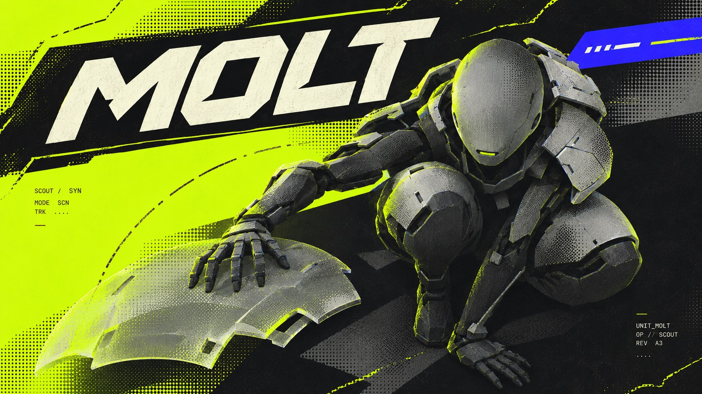
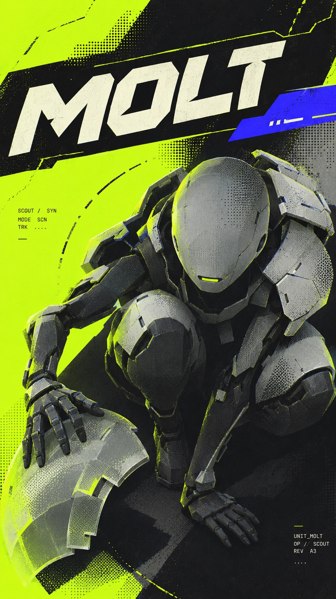
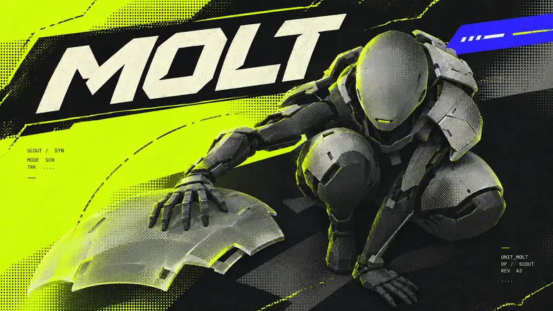
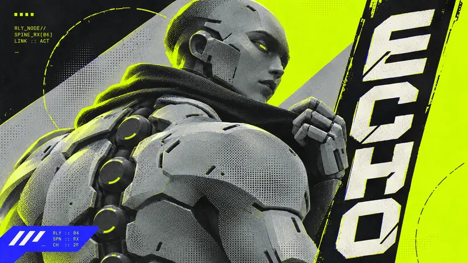
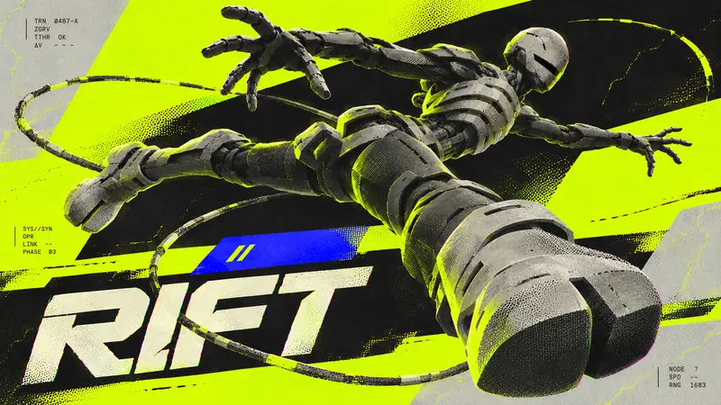
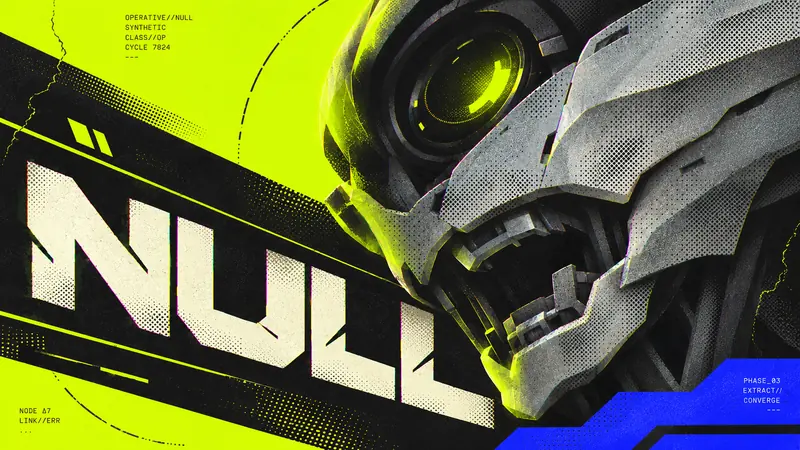

Type Posters · AI image style prompt
Acid Phase Operatives
Sci-fi operative key visuals: acid fluorescent fields, cool-grey synthetic humans, coarse local halftone dots and diagonally sliced title tracks.


4 example cases
Same style.json, different subjects. Each case's values are in the examples section of the JSON.




What this style does
Sci-fi character key visuals fusing acid fluorescent fields, cool-grey synthetic humans, local coarse halftone dots and diagonally sliced title tracks.
Signature traits
- Keep a synthetic humanoid operative as the dominant hero of futuristic game character key art.
- Use acid yellow-green flat fields against dense near-black shadows with cold gray armor and bone-white title letters.
- Model sculptural armor with cold directional light and localized soft acid edge bloom, never glossy showroom lighting.
- Apply visibly coarse black halftone to armor and shadow transitions, retaining small-scale print misregistration.
- Set the readable primary name in heavy chamfered techno sans with medium-wide proportions and stencil cuts on an oblique black title rail.
- Interlock the character, title rail, and off-center electric-blue phase tab as three strong graphic planes.
style.json
{
"schema_version": "2.2",
"style_version": "1.0.0",
"style_name": "Acid Phase Operatives",
"style_slug": "acid-phase-operatives",
"style_summary": "Sci-fi character key visuals fusing acid fluorescent fields, cool-grey synthetic humans, local coarse halftone dots and diagonally sliced title tracks.",
"category": "Type Posters",
"environment_variables": {
"ASPECT_RATIO": "9:16 or 16:9",
"STYLE_FIDELITY_ANCHORS": "Joined fixed CORE and FLEX anchors",
"SOURCE_CONTENT_TO_AVOID": "Joined source identity exclusions",
"SUBJECT": "Original synthetic humanoid identity and armor silhouette",
"SUBJECT_ACTION": "Concrete action, camera and pose",
"MAIN_TEXT": "Exact short operative name",
"DESIGN_DIRECTION": "Theme-driven hierarchy and separate ratio composition plans"
},
"style_fidelity_anchors": [
"[CORE] Keep a synthetic humanoid operative as the dominant hero of futuristic game character key art.",
"[CORE] Use acid yellow-green flat fields against dense near-black shadows with cold gray armor and bone-white title letters.",
"[CORE] Model sculptural armor with cold directional light and localized soft acid edge bloom, never glossy showroom lighting.",
"[CORE] Apply visibly coarse black halftone to armor and shadow transitions, retaining small-scale print misregistration.",
"[CORE] Set the readable primary name in heavy chamfered techno sans with medium-wide proportions and stencil cuts on an oblique black title rail.",
"[CORE] Interlock the character, title rail, and off-center electric-blue phase tab as three strong graphic planes.",
"[FLEX] Move and rotate title rails, broken scan arcs, and sparse monospaced texture blocks to suit the character action.",
"[FLEX] Preserve about 22 percent quiet flat designed fields while varying aggressive crop, pose, and camera scale."
],
"source_content_to_avoid": [
"MARATHON and Bungie wording, logo, condensed branded footer and icon row",
"The frontal upturned human face, red square eyes and twin crown blocks of R1",
"The pointed black-and-white side helmet and large rear cable loop of R2",
"M80, NBG, VS, team marks, central electric-blue versus crest and source numbers",
"Source crosshair grid, hazard-stripe border, exact layout, watermarks and creator identifiers"
],
"visual_deconstruction": {
"genre": "Original synthetic operative character key art for an imagined game roster",
"grammar": "Acid industrial futurism, oversized techno type, dark 3D figures, print halftone, sparse technical annotations",
"signature": {
"R1": "Frontal face + fixed brand footer becomes articulated action + movable oblique name rail; crosshair grid becomes segmented scan arcs.",
"R2": "Pointed profile helmet + central versus crest becomes multiple modular silhouettes + off-center phase tabs."
},
"fusion": {
"genre_hero": "Shared equally: R1 synthetic character and R2 armored humanoid.",
"palette": "R1 provides acid/black contrast, R2 supplies gray ceramic and bone text with blue phase tabs.",
"finish_rendering": "R1 cold sculptural shadows and localized bloom, R2 visible coarse halftone on armor transitions.",
"type": "R1 large scale and chamfer cuts fused with R2 medium-wide techno proportions; transformed bone stencil names on black oblique rails.",
"layout_layering": "R1 strong black structural separation relocated into moving rails, R2 type/figure overlap transformed into off-center interlocks.",
"secondary_elements": "R1 scan grammar transformed to broken arcs; R2 blue accent becomes non-emblem phase tab.",
"energy": "Shared high tension, target 22 percent quiet, local disorder without adding global damage.",
"balance": "Six CORE anchors: shared hero; shared palette; R1 light; R2 halftone; shared transformed type; shared interlock. Neither source supplies more than half; both remain large visible systems."
},
"energy": {
"quiet_surface": "R1 about 24%; R2 about 20%; median target 22%, acceptable 18–26% plain designed fields.",
"density": "Medium-high, one dominant hero and substantial graphic structure, not wall-to-wall microtype.",
"layering": "Three to four visibly intersecting planes: ground, armor, title rail, phase tab/scan.",
"disorder": "Medium-low overall; localized coarse dot transitions and slight registration offsets; no tears or stains.",
"tension": "High: aggressive silhouette crop, oblique rail and image-type occlusion are essential.",
"ink_limit": "At most five palette colors including gray ground; do not add red lights or rainbow UI."
},
"series_constants": {
"palette_roles": "Acid field, black shadow/rail, gray armor/ground, bone title, electric-blue tab.",
"light": "Cold directional studio-like sidelight with muted acid edge spill.",
"kit": "Oblique black title rail, broken scan arc, off-center blue phase tab, sparse technical microtype.",
"title": "Bone medium-wide heavy chamfered stencil techno sans; never original branded wordmark."
}
},
"composition": {
"design_layer": "At least about 30 percent visible fields, rails and title structure.",
"hierarchy": "One character, one dominant name, subordinate scan and microtype.",
"variation": "Top-left / right vertical / lower-left / middle diagonal name positions; hero right / left / center / right.",
"ratios": "True re-composition per case direction; no padding or crop-only companion."
},
"typography": {
"primary": "Exact uppercase case name; heavy medium-wide chamfered techno sans with sparse stencil cuts; bone on black rail.",
"texture": "Tiny monospaced telemetry, small digits, clipped technical blocks; decorative and not required to be literal."
},
"color_palette": {
"acid_field": "#C5FF00",
"shadow_rail": "#090E11",
"armor_ground": "#ADB5AD",
"primary_text": "#F0F2DB",
"phase_tab": "#3635F5"
},
"image_treatment": {
"render": "Cold sculptural CGI character with graphite shadows and gray ceramic plates.",
"texture": "Coarse black halftone dots locally on armor and shadow transition, about 20–30% of frame; faint fine grain elsewhere, slight acid registration offset at selected edges; preserve soft shadow/bloom in selected areas, no global sharpening or grime."
},
"design_rules": [
"Every case visibly combines acid-black tension and half-toned gray armor.",
"Keep primary name exact and readable; texture text may be fragmented or clipped.",
"Maintain approximately 22 percent quiet designed surface.",
"Use phase tab as structural color overlap, never a team badge.",
"Recompose each ratio with a different spatial plan while preserving character identity.",
"Use one focal character; forbid decorative environments that compete with the design."
],
"do": [
"Push scale and crop while retaining character recognition.",
"Keep halftone local and large enough to read at viewing size.",
"Use original silhouette and action for every operative."
],
"avoid": [
"Copying either reference costume, wordmark, logo, central crest or footer.",
"Generic polished cinematic still with tiny caption.",
"Global heavy grime, torn paper, rainbow lights or excess HUD graphics.",
"Four interchangeable centered helmet portraits."
],
"prompt_template": "Create a finished futuristic game character key-art poster, aspect ratio {ASPECT_RATIO}. Original operative: {SUBJECT} Action and camera: {SUBJECT_ACTION} Primary name, exact: \"{MAIN_TEXT}\". Composition: {DESIGN_DIRECTION} Fused visual system: acid yellow-green fields and near-black pressure with cold gray sculptural armor; localized coarse halftone and slight registration offset; bone heavy medium-wide chamfered techno name on oblique black rail; off-center electric-blue phase tab. Use cold directional light and restrained acid edge bloom. Maintain about 22 percent quiet designed fields, three to four interlocking planes, and a visible structural design layer. Sparse monospaced telemetry is texture text, allowed to fragment; only the operative name is primary. Follow these anchors: {STYLE_FIDELITY_ANCHORS} Exclude source content: {SOURCE_CONTENT_TO_AVOID}",
"negative_prompt": "Source logos, MARATHON, Bungie, M80, NBG, VS crest, red square eyes, horned profile helmet, fixed bottom brand banner, crosshair grid, copied costume or pose, bland centered portrait template, global dirt, heavy paper damage, soft pastel palette, tiny name, unreadable primary glyphs, malformed limbs, mockup frame, watermark.",
"examples": [
{
"case_name": "molt",
"values": {
"SUBJECT": "A compact synthetic scout with a smooth oval ceramic head, small slit sensor, articulated graphite limbs and pale gray segmented shoulder armor; no horns.",
"SUBJECT_ACTION": "Crouched tightly, viewed steeply from above; one hand steadies a detached translucent segmented shoulder shell, two knees visibly bent.",
"MAIN_TEXT": "MOLT",
"DESIGN_DIRECTION": "Hero mass lower-right, primary name in a large top-left slanted black rail; acid quiet area at left, short blue phase tab upper-right. The shed shell forms an offset layer. In portrait retain folded legs; in landscape extend the detached shell leftwards and broaden the rail, keeping the overhead view."
}
},
{
"case_name": "echo",
"values": {
"SUBJECT": "A broad-shouldered relay android with pale ceramic back plates, an exposed row of round graphite spinal receivers, smooth non-horned head and fabric collar.",
"SUBJECT_ACTION": "Rear three-quarter waist-up view, torso faces away left while the head turns back toward the viewer, one hand gripping its collar.",
"MAIN_TEXT": "ECHO",
"DESIGN_DIRECTION": "Hero mass left; primary name on a tall vertical black rail along right, all letters readable; blue tab near lower-left. Spinal receivers make the back the focal shape. Portrait uses the full tall rail; landscape leaves a broad acid right field and keeps the side rail tall, never a bottom footer."
}
},
{
"case_name": "rift",
"values": {
"SUBJECT": "A lean tether-running synthetic humanoid in graphite articulated limbs and bone-gray ribbed chest plates, a rounded helmet with a narrow dark face slit, oversized split-toe boots.",
"SUBJECT_ACTION": "Floating sideways in zero gravity, full body visible with one boot strongly foreshortened toward the viewer, tether arcing from the waist, two arms reaching in opposing directions.",
"MAIN_TEXT": "RIFT",
"DESIGN_DIRECTION": "Hero crosses center diagonally; huge primary name lower-left on interrupted black rail with tether cutting the rail beyond the letters; blue tab above center. Portrait stacks depth from large boot to small head; landscape stretches the whole body horizontally and the tether into a wide broken arc. Keep recognizable anatomy."
}
},
{
"case_name": "null",
"values": {
"SUBJECT": "A synthetic humanoid head with one large circular optical lens, an open mechanical lower jaw, layered pale ceramic cheek plates and deep graphite hollow neck; no human skin and no helmet horns.",
"SUBJECT_ACTION": "Extreme close-up at a strong diagonal tilt, looking down toward the viewer, upper cranium and right side extending beyond frame.",
"MAIN_TEXT": "NULL",
"DESIGN_DIRECTION": "Bold case: enormous head mass upper-right, name on a steep diagonal black rail through middle-left; jaw overlaps rail edge without hiding any title letter; blue stepped tab lower-right. Portrait frames jaw and single lens; landscape lets head enter from top-right and extends long name rail left. Bigger crop and stronger rail angle than either reference."
}
}
]
}